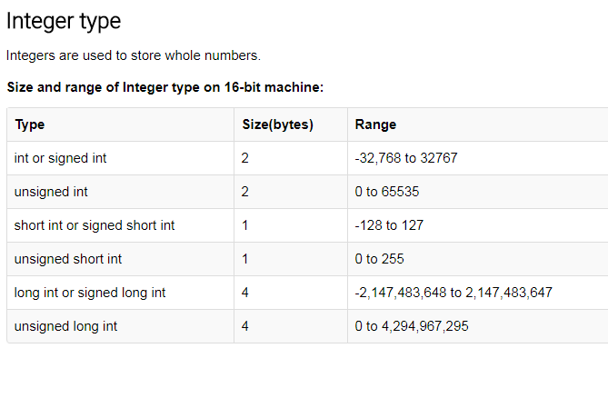
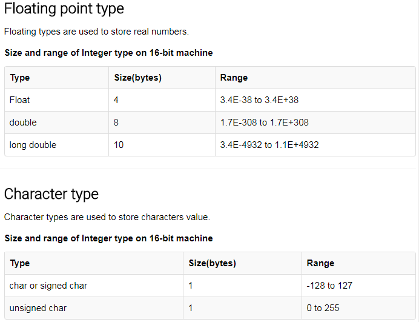

DATATYPES In C Programming
Data types specify how we enter data into our programs and what type of data we enter. C language has some predefined set of data types to handle various kinds of data that we can use in our program. These datatypes have different storage capacities.
C language supports 2 different type of data types:
- Primary data types:
These are fundamental data types in C namely integer(
int), floating point(float), character(char) andvoid. - Derived data types:
Derived data types are nothing but primary datatypes but a little twisted or grouped together like array, stucture, union and pointer. These are discussed in details later.
Data type determines the type of data a variable will hold. If a
variable x is declared as int. it means x can hold only integer values.
Every variable which is used in the program must be declared as what
data-type it is.
Integer type
Integers are used to store whole numbers.
Size and range of Integer type on 16-bit machine:
 void type
void type means no value. This is usually used to specify the type of functions which returns nothing. We will get acquainted to this datatype as we start learning more advanced topics in C language, like functions, pointers etc.